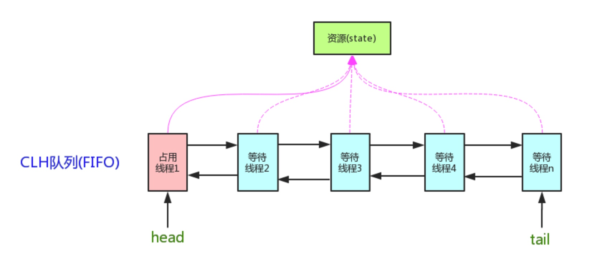

原理
AQS（AbstractQueuedSynchronizer）同步器，可以利用它协调线程之间的同步行为，核心思想是，如果被请求的共享资源空闲，则将当前请求资源的线程设置为有效的工作线程，并且将共享资源设置为锁定状态。如果被请求的共享资源被占用，那么就需要一套线程阻塞等待以及被唤醒时锁分配的机制，这个机制 AQS 是用 CLH 队列实现的，即将暂时获取不到锁的线程加入到队列中。

同步状态使用成员变量 state（ volatile、原子操作 ）表示，AQS 就是通过对 state 的原子操作来达到同步各个线程的目的。
共享方式
独占
只有一个线程可以执行，如 ReentrantLock。又分为公平锁和非公平锁，区别有两点：
- 非公平锁在调用 lock 后，会先使用 CAS 进行一次抢锁，抢不到就进入
tryAcquire()方法；公平锁直接进入tryAcquire() - 如果锁释放了，非公平锁再抢一次锁，而公平锁要判断阻塞队列有没有线程在等待，非公平锁抢不到锁或公平锁有其他线程在等待就进入阻塞队列等待唤醒
ReentrantLock，state 初始化为 0，表示未锁定状态。A 线程lock()时，会调用tryAcquire()独占该锁并将 state+1。此后，其他线程再tryAcquire()时就会失败，直到 A 线程unlock()到 state=0（即释放锁）为止，其它线程才有机会获取该锁。
共享
多个线程可以同时执行，如 Semaphore、CountDownLatch。
等待队列
如果获取锁失败，就加入等待队列，是如何实现的？
- 通过当前线程和锁模式新建一个节点
- pred 指针指向尾节点 tail
- 将新节点的 prev 指向 pred
- 通过 compareAndSetTail 完成尾节点的设置
- 如果没有初始化就构造一个空的头结点
如何自定义同步器？
AQS 的设计是基于模版方法的，继承 AbstractQueuedSynchronizer 并重写指定的方法即可（tryAcquire / tryRelease 或 tryAcquireShared / tryReleaseShared）。
isHeldExclusively()//该线程是否正在独占资源。只有用到condition才需要去实现它。
tryAcquire(int)//独占方式。尝试获取资源，成功则返回true，失败则返回false。
tryRelease(int)//独占方式。尝试释放资源，成功则返回true，失败则返回false。
tryAcquireShared(int)//共享方式。尝试获取资源。负数表示失败；0表示成功，但没有剩余可用资源；正数表示成功，且有剩余资源。
tryReleaseShared(int)//共享方式。尝试释放资源，成功则返回true，失败则返回false。
常见的同步器（辅助类）
Semaphore
可以限制访问共享资源的线程数量。
原理是初始化 state 为 N，每个线程执行 acquire()，如果 state > 0，就使得 state - 1，如果 state = 0，就加入阻塞队列，并自旋判断 state 是否大于 0；线程调用 release() 使 state + 1，阻塞的线程会竞争这个锁。
CountDownLatch
可以使多个线程阻塞在一个地方，直到所有线程任务都执行完毕。（类似倒计时的效果，一次性的）
原理是初始化 state 为 N，每个线程执行 countDown() 方法使得 state - 1，调用 await() 会阻塞并自旋判断 state，如果 state = 0，就释放所有等待的线程，执行 await() 之后的语句。
典型用法：
- 主线程（
await）等待多个子线程执行完毕（countDown）； - 主线程通知（
countDown）所有等待的线程执行（await），CountDownLatch 计数器需要初始化为 1。
CyclicBarrier
基于 ReentrantLock 实现，和 CountDownLatch 类似但更强大，让一组线程全部到达同步点后，这组线程才向后执行。
提供了一个高级构造函数，能传入一个 Runnable，所有线程到达屏障后，优先执行 Runnable。
构造时指定拦截的数量 count = N，每个线程调用 await() 使得 count - 1，如果 count = 0，执行构造器传入的任务，然后通知所有阻塞线程执行；如果 count > 0，就自旋阻塞。
CyclicBarrierVSCountDownLatch
CyclicBarrier是多个线程在任意一个没有完成时，所有线程都等待（内部等待）；CountDownLatch是一/多个线程等待其他 N 个线程完成某件事情（等待外部线程）CyclicBarrier调用await()减一后会阻塞直到计数器为 0；CountDownLatch调用countDown()减一后继续运行，其他线程调用await()阻塞直到计数器为 0CountDownLatch是一次性的；CyclicBarrier提供 reset 方法